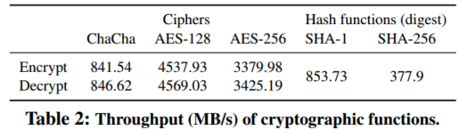
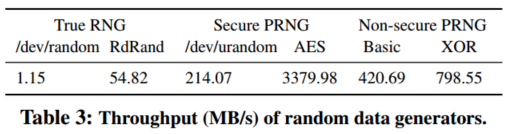

| Venue | Category |
|---|---|
| SYSTOR'18 | Secure Deduplication |
How to Best Share a Big Secret1. SummaryMotivation of this paperHow to best share a big secretImplementation and Evaluation2. Strength (Contributions of the paper)3. Weakness (Limitations of the paper)4. Some Insights (Future work)
Motivation
Data-protection approaches are considered computationally expensive.
This paper intends to present the first end-to-end comparison of state-of-art encryption-based and secret sharing data protection approaches.
previous evaluation results do not provide a clear picture of how these schemes compare in terms of application-perceived read and write throughput.
the combination of a random number generator, erasure code, and encryption algorithm


Encrypt files at the client side
Key-based encryption: (provide computational security)
encryption is considered computational expensive.
Secret sharing: (cloud of clouds, provide information-theoretic security)
combines the user's original data with redundant random data
the original data can only be decoded by obtaining all of the encoded pieces.
Without requiring maintenance of encryption keys.
Drawback:
information-theoretic security vs. computational security
To eliminate two major bottlenecks of data protection
Evaluate all stages of the data path:
Random data generation
true random: external noise or hardware interrupts: /dev/random
CSPRNG: whose seed must be generated by a true random generator: /dev/urandom
Encoding and encryption overheads
Overall throughput
Comparison
Computational overhead
For End-To-End Evaluation
Aim: to understand the effect of the various system-level parameters on the bottlenecks.
Setting: multi-cloud (EC2), a distributed object store prototype. re-implement all schemes in Java.
Once storage and network bottlenecks are introduced, secret-sharing is outperformed by encryption based techniques
high cost of true random data generation.
- computational complexity
- storage throughput (on local storage)
- network bandwidth (in cloud deployments)
data leakage from the cloud have been recently documented.
vendor lock-in outage that a single cloud provider might suffer
AES-128: key size is 128 bits AES-256: key size is 256 bits